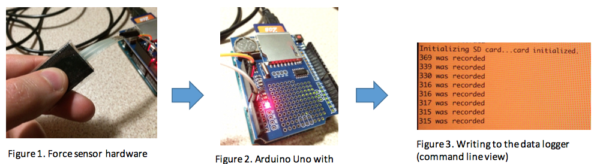
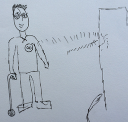
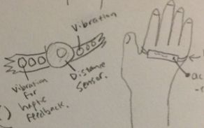
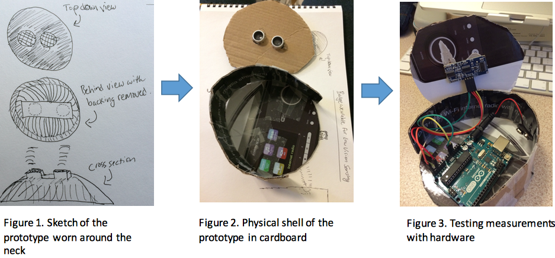
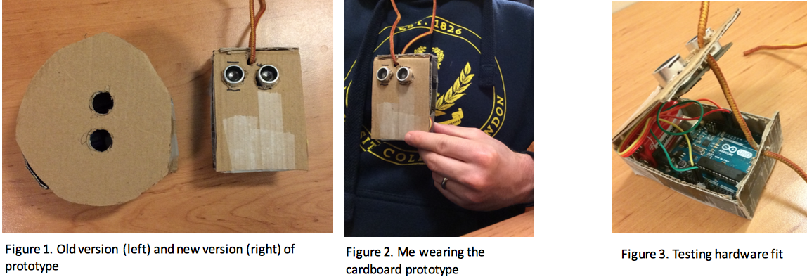
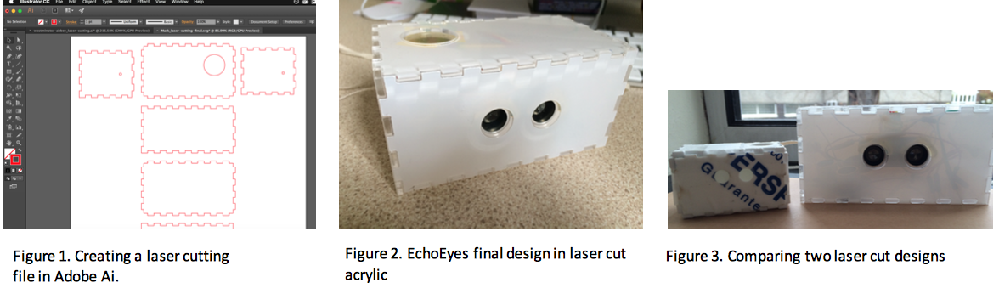
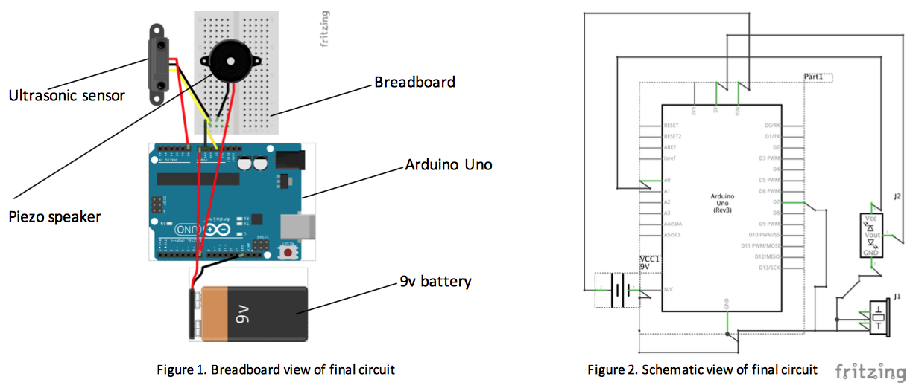
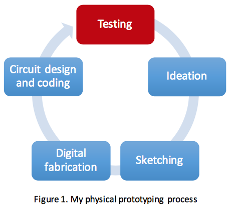

Prototype a physical device that can assist someone or augment their ability to do something.
Helping the blind see with sound using a physical computing prototyping process.
Around the world, 314 million have a vision disability, and using a guiding cane is a major way for these people to navigate their environment. A guiding cane is low cost, portable, and it’s a recognized symbol of disability. However, the problem with guiding canes is that they cannotsenseobjectshigherup-likeatchestheight-orobjects that are farther away. Previous prototypes to solve this problem resulted in expensive electronics on the cane or head-mounted cameras. Social acceptability is another consideration! People will not want to wear something that calls attention to their disabilities.
Whilst brainstorming my idea, I experimented with various sensors and hardware for Arduino Uno. Figures 1, 2, and 3 show analog data (via force sensor) being recorded to a SD card. This exploration was important to my thought process because it inspired me to think how sensors could help people with Multiple Sclerosis torecordandsharedatawiththeirGP. This device can help the patient understand how their strength is changing over time.
While my final idea didn't relate to MS, I did want to build something that helps a medical disability, and this exploration did spark my interest in helping to augment technology that helps the blind and low vision users.

I wanted to build something that did not involve the guiding cane because of the expense. I wanted it to be fun, so I thought about something wearable that may look fashionable.
I thought about a wearable device that one could pin to oneself. However, given the weight of the Arduino Uno, sensors, and likely the need to hold a battery, I realized it would be too heavy to be a pin.
I then thought about something that was easy to remove – something around the neck. I found a lanyard with keycard and decided that perhaps the form factor was worth exploring.
I didn’t immediately dismiss a wearable that can be pinned to clothing. Figure 3 shows a paper sketch of a blind person wearing it. However, the weight of the prototype plus the difficulty had by a low vision user may discourage further exploration.

Another early idea was a prototype worn on the wrist—a rather popular place for wearable devices. However, I received invaluable feedback from colleagues with concerns about constant wrist movement and sensor calibration. I decided against this design and reflected on how important it was to share design feedback with others.


What I really love about using cardboard (or similar) for fast prototyping is that there’s no technology involved, but ideas are immediately tangible and lucid—something that’s missing from paper sketching. I was able to move from paper to a tangible model quickly.
Figure 1, 2, and 3 show a final paper sketch transforming into a cardboard prototype – a valuable tool in the physical prototyping toolbox. This first cardboard mockup is an amalgamation of the pin and lanyard ideas, but I did refine it later in the design process.

Figure 1 shows the old version from the previous page along with the new version (right). This iteration shows that I’ve moved away from the pin badge design and moved to a design worn around the neck. I think this design is easier to remove, and since it’s a rectangle, there’s no empty space left inside.
Figure 1, 2, and 3 show a final paper sketch transforming into a cardboard prototype – a valuable tool in the physical prototyping toolbox. This first cardboard mockup is an amalgamation of the pin and lanyard ideas, but I did refine it later in the design process.
Unfortunately, I made a mistake in measuring the space required for the hardware, and the cardboard ‘case’ was a bit snug for everything. This does suggest a downside of using cardboard mockups because a problem like this could be changed using software design programs in seconds. A lack of digital tools like ‘undo’ can also make working with cardboard tedious.
What I didn’t at first know about 3d printing is how slow it is with a failure rate that isn't made better by the time it takes to print something. I decided to keep this final design in TinkerCad because of how fast laser cutting would be. My preference for laser cutting over 3d printing matches the rapid ideation and prototyping earlier using paper and cardboard. 3d printing just seemed too slow. Furthermore, I think where 3d printing excels past laser cutting is in intricate designs such as hanging edges and surfaces with multiple angles or curves.

Figure 1 shows me using Adobe Illustrator to design the file for laser cutting. It’s helpful that creating a laser cutting doesn’t involve much else than knowing a few rules and the basics of vector design software. However, the downside of laser cutting, I learned, was the creating joints is very difficult to do. The smaller design in Figure 3 is the result of me mis- calculating joint measurements. The difficulty here is that, like cardboard, it’s hard to get sizing right for hardware housing. Laser cutting was especially difficult to envision how each side would fit together. This is where I would switch over to creating a prototype in TinkerCad, if only just to see how it looks in 3d.
These tradeoffs between cardboard, laser cutting and 3d printing make physical prototyping very interesting and even low-tech at times. For example, when I received my laser cutting, I still had to super glue it together – fitting the ultrasonic sensor was difficult. This is where the low-tech part comes in. Unlike the traditional UCD process for apps/services, physical prototyping relies on both digital and physical (and sometimes primitive) tools. I think on one hand this really reflects the ‘do it yourself’ culture so popular with micro computing enthusiasts. On the other hand, I suggest that there may be room for improvement in combining together tools to make the prototyping process faster.

This software was great in helping me not only wire everything together, but it enabled me to check if the circuit worked using the built in code editor. Obviously, this is a crucial step in the physical prototyping process. Upon reflection, I may even start this process earlier next time because if the hardware is not going to work together, such as needing a rather large transducer, then that may have implications for 3d printing or laser cutting measurements.
There are a few limitations to consider with EchoEyes. While I did consider alternate forms of feedback, I believed the high pitch sound would be appropriate. However, after building the prototype, it’s clear that another modality such as vibro-tactile feedback may be better. Perhaps vibration sensors around the neck could be used with the help of conductive thread.
If the modality of feedback would remain as audio, then perhaps the MP3 shield would be better so that different sounds may be used. To counterbalance the added weight this would add, I would need to consider moving past the Arduino Uno to something like the LilyPad Arduino which is more compact and built for wearable projects.
Finally, I think it’s worth noting that my prototype did not include any user testing. This would be the next step before further iterations. See Figure 1.

Copyright © 2017 Mark Bubel